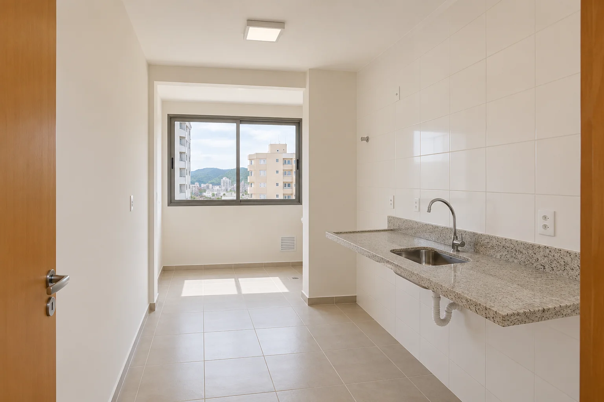

Prévia 01
Operação EIAH
Para equipes imobiliárias que vão atender pelo Front Door da EIAH. Na prévia, percorra o atendimento da recepção à revisão e acompanhe os pedidos salvos na visão da equipe.
Organize o atendimento da sua imobiliária ou monte uma vitrine com a sua marca.
Prévia 01
Para equipes imobiliárias que vão atender pelo Front Door da EIAH. Na prévia, percorra o atendimento da recepção à revisão e acompanhe os pedidos salvos na visão da equipe.

Prévia 02 editável
Para imobiliárias que querem uma vitrine com a própria marca. Edite a apresentação, os imóveis, as galerias e os contatos, e teste a jornada de atendimento no site.
As prévias usam dados fictícios. Os pedidos ficam na mesma aba e as personalizações são aplicadas apenas neste navegador.